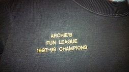
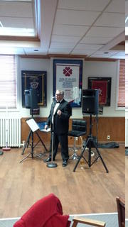

How's it going eh???
Some Sunday League Trivia
Take a look at what the league was called 17 years ago!! What's amazing is the sweatshirt still fits Al. How many of us can say that???
Entertainment
Right-Click and select "View in different tab" here for a recording of Sandy Shore performing at the Club!! About the League
Where: The Ottawa Curling Club
When: Sundays - 11AM to 1PM
Ends: 8, time permitting
El Presidente: Chip
Treasurer: Brock
Web Site: Paul C